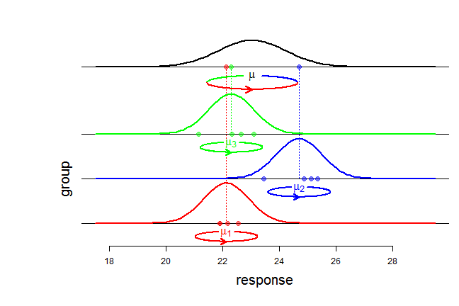

-
The balanced ANOVA model with random effects
2014-04-06
Source\(\newcommand{\indic}{\mathbf{1}}\) \(\newcommand{\perpoplus}{\overset{\perp}{\oplus}}\) \(\newcommand{\RR}{\mathbb{R}}\)
The balanced ANOVA model with random effects
The balanced ANOVA model is used to model a sample \(y=(y_{ij})\) with a tabular structure: \[y=\begin{pmatrix} y_{11} & \ldots & y_{1J} \\ \vdots & y_{ij} & \vdots \\ y_{I1} & \ldots & y_{IJ} \end{pmatrix}, \] \(y_{ij}\) denoting the \(j\)-th response in group \(i\). In the model with random effects, it is assumed that the responses \(y_{ij}\) are generated in two steps. First, the group means \(\mu_i\) are independently generated according to a Gaussian distribution \({\cal N}(\mu, \sigma^2_b)\) where \(\mu\) is the overall mean and \(\sigma^2_b\) is the so-called between variance. Second, the responses \(y_{ij}\), \(j =1,\ldots,J\), for each group
\(i\), are independently distributed according to a Gaussian distribution \({\cal N}(\mu_i, \sigma^2_w)\) with within variance \(\sigma^2_w\) and mean \(\mu_i\). Shortly, the model can be written: \[\begin{cases} (y_{ij} \mid \mu_i) \sim_{\text{iid}} {\cal N}(\mu_i, \sigma^2_w) & j=1,\ldots,J \\ \mu_i \sim_{\text{iid}} {\cal N}(\mu, \sigma^2_b) & i=1,\ldots,I \end{cases}.\]
An equivalent writing of this model, and from now on using capital letters for random variables, is \[Y_{ij} = \mu + \sigma_bA_{i} + \sigma_wG_{ij},\] where all random variables \(A_i\) and \(G_{ij}\) are independent and \(\sim {\cal N}(0,1)\).
The three summary statistics \(\bar{Y}_{\bullet\bullet}\), \(SS_b(Y)\), \(SS_w(Y)\)
Using the tensor product language introduced in this article, the model can be written \[Y = \mu({\bf 1}_I\otimes{\bf 1}_J) + \sigma_b A\otimes\indic_J +\sigma_wG, \qquad A \sim SN(\RR^I), \quad G \sim SN(\RR^I\otimes\RR^J).\]
The overall mean \(\bar{Y}_{\bullet\bullet}\) is given by the projection of \(Y\) on the subspace \([{\bf 1}_I]\otimes[{\bf 1}_J]\):
\[P_{[{\bf 1}_I]\otimes[{\bf 1}_J]} Y = \bar{Y}_{\bullet\bullet}({\bf 1}_I\otimes{\bf 1}_J).\]Then the variations \(Y_{ij}-\bar{Y}_{\bullet\bullet}\) around the overall mean are given by the projection on the orthogonal complement \({\Bigl([\indic_I]\otimes[\indic_J]\Bigr)}^\perp\). Knowing that \[ \RR^I \otimes \RR^J = \Bigl([\indic_I]\otimes[\indic_J]\Bigr) \perpoplus \Bigl([\indic_I]^\perp\otimes[\indic_J]\Bigr) \perpoplus \Bigl([\indic_I]\otimes[\indic_J]^\perp\Bigr) \perpoplus \Bigl([\indic_I]^\perp\otimes[\indic_J]^\perp\Bigr), \] one gets \[ \begin{align} \underset{\text{'total'}}{\underbrace{ {\Bigl([\indic_I]\otimes[\indic_J]\Bigr)}^\perp} } & = \Bigl([\indic_I]^\perp\otimes[\indic_J]\Bigr) \perpoplus \Bigl([\indic_I]\otimes[\indic_J]^\perp\Bigr) \perpoplus \Bigl([\indic_I]^\perp\otimes[\indic_J]^\perp\Bigr) \\ & = \underset{\text{'between'}}{\underbrace{\Bigl([\indic_I]^\perp\otimes[\indic_J]\Bigr)}} \perpoplus \underset{\text{'within'}}{\underbrace{\Bigl(\RR^I\otimes[\indic_J]^\perp\Bigr)}}, \end{align} \] thereby yielding the decomposition of the variations: \[ P^\perp_{[\indic_I]\otimes[\indic_J]}Y = P_{[\indic_I]^\perp\otimes[\indic_J]}Y + P_{\RR^I\otimes[\indic_J]^\perp}Y, \] whose component formulae are:
\({\bigl(P^\perp_{[\indic_I]\otimes[\indic_J]}Y\bigr)}_{ij}=Y_{ij}-\bar{Y}_{\bullet\bullet}\)
\({\bigl(P_{[\indic_I]^\perp\otimes[\indic_J]}Y \bigr)}_{ij} = \bar{Y}_{i\bullet}-\bar{Y}_{\bullet\bullet}\)
\({\bigl(P_{\RR^I\otimes[\indic_J]^\perp}Y\bigr)}_{ij} = Y_{ij}-\bar{Y}_{i\bullet}\)
Now we can see that the three summary statistics (overall mean, between sum of squares, within sum of squares) \[\bar{Y}_{\bullet\bullet}, \quad SS_b(Y):={\Vert P_{[\indic_I]^\perp\otimes[\indic_J]}Y \Vert}^2, \quad SS_w(Y):={\Vert P_{\RR^I\otimes[\indic_J]^\perp}Y \Vert}^2,\] are independent random variables. Indeed, the overall mean \(\bar{Y}_{\bullet\bullet}\) is given by \[\begin{align} P_{[{\bf 1}_I]\otimes[{\bf 1}_J]} Y &= \bar{Y}_{\bullet\bullet}({\bf 1}_I\otimes{\bf 1}_J) \\ & = \mu({\bf 1}_I\otimes{\bf 1}_J) + \sigma_b(P_{[{\bf 1}_I]}A)\otimes\indic_J+\sigma_wP_{[{\bf 1}_I]\otimes[{\bf 1}_J]}G, \end{align}\] the between variations are \[P_{[\indic_I]^\perp\otimes[\indic_J]}Y = \sigma_b(P^\perp_{[\indic_I]} A)\otimes\indic_J + \sigma_w P_{[\indic_I]^\perp\otimes[\indic_J]} G,\] and the within variations are \[P_{\RR^I\otimes[\indic_J]^\perp}Y = \sigma_wP_{\RR^I\otimes[\indic_J]^\perp} G.\] Independence follows from the independence b between \(G\) and \(A\) and from the orthogonality between the ranges of the different projections.
It is easy to derive \(\bar{Y}_{\bullet\bullet} \sim {\cal N}\left(\mu, \frac{\sigma^2}{IJ}\right)\) with \(\sigma^2=J\sigma^2_b+\sigma^2_w\). It is also easy to get \(SS_w(Y) \sim \sigma^2_w\chi^2_{I(J-1)}\) because of \[P_{\RR^I\otimes[\indic_J]^\perp}Y = \sigma_wP_{\RR^I\otimes[\indic_J]^\perp}G.\] To derive the law of \(SS_b(Y)\), note that \[ \begin{align} P_{[\indic_I]^\perp\otimes[\indic_J]} G & = \begin{pmatrix} \bar{G}_{1\bullet} - \bar{G}_{\bullet\bullet} & \ldots & \bar{G}_{1\bullet} - \bar{G}_{\bullet\bullet} \\ \vdots & \vdots & \vdots \\ \bar{G}_{I\bullet} - \bar{G}_{\bullet\bullet} & \ldots & \bar{G}_{I\bullet} - \bar{G}_{\bullet\bullet} \end{pmatrix} \\ & = (P^\perp_{[\indic_I]}G_{\text{row}}) \otimes \indic_J \end{align}\] where \(G_{\text{row}} = (\bar{G}_{i\bullet})\) is the vector of row means of \(G\), and then one can write
\[P_{[\indic_I]^\perp\otimes[\indic_J]} Y = \bigl(P^\perp_{[\indic_I]}(\sigma_b A + \sigma_w G_{\text{row}})\bigr) \otimes \indic_J.\] Now it is easy to see that the components of \(\sigma_b A + \sigma_w G_{\text{row}}\) are \(\sim_{\text{iid}} {\cal N}(0, \sigma^2)\), and consequently \(SS_b(Y) \sim \sigma^2\chi^2_{J-1}\).Confidence interval for the overall mean
By our previous derivations, the statistic \[ \frac{\bar Y_{\bullet\bullet} - \mu}{\frac{1}{\sqrt{I}}\sqrt{\frac{SS_b(Y)}{J(I-1)}}}\] has a Student \(t\) distribution with \(I-1\) degrees of freedom, wherefrom it is easy to get an exact confidence interval about the overall mean \(\mu\).
- Home
- About
- PoirotReproducible Blogging with R Markdown
- SlidifyReproducible html5 slides from R markdown
- R-bloggersBlog posts about R, contributed by R bloggers worldwide.
- stla.overblogMy previous blog
- Timely Portfolio A great blog about R, Javascript, and more